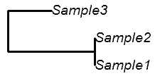
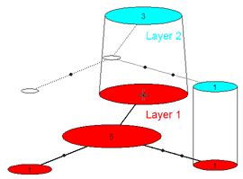
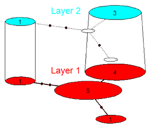

An R-script for summarizing heterochronous genetic data.
Last updated: October 6, 2014
Overview
The use of heterochronous data to study demographic changes in epidemiology and ancient DNA studies has revolutionized our understanding of complex evolutionary processes such as invasions, migrations, and responses to drugs or climate change. While there are sophisticated applications based on Markov Chain Monte Carlo (MCMC) or Approximate Bayesian Computation (ABC) to study these processes through time, summarizing the raw genetic data in an intuitively meaningful graphic can be challenging, most notably if identical haplotypes are present at different points in time.
Alternative 1: Trees
Perhaps the most enduring icon of all biology is the phylogenetic tree. Darwin drew the first known example 17 years before publishing The Origin of Species, a book whose only figure was a phylogenetic tree. However, these powerful visual tools do not always convey the maximal amount of information. Consider the following. When two sequences are identical, they are usually depicted as sharing a node without branches. In the figure below, Samples 1 and 2 are identical.
Similarly, when two sequences are from different time periods, then branch lengths are shortened appropriately so that the tips do not align (i.e., the tree is non-ultrametric). In the example below, Sample3 is chronologically older than the other two samples.
However, when two sequences are identical and come from different time periods, then the researcher faces something of a conundrum. Does she ignore the heterochrony and draw the tree as in the first example, or does she ignore the shared sequence and emphasize the heterochrony as below? (In this example, sequence 1 is older than sequence 2, but the base pairs are identical)
The value of phylogenetic trees is not in question; however, we suggest that in this specific case neither alternative is entirely satisfactory. This problem also arises where there are large numbers of shared or related haplotypes from many different time points. The inter-mixing of samples, though usually representable, does not always clearly demonstrate the point the scientist wishes to convey.
Alternative 2: Haplotype networks
The familiar haplotype network is a two-dimensional, intuitively appealing summary of genetic diversity within a single group, in which the size of each node (circle) represents the frequency of a haplotype, and in which the length of (or number of tick-marks on) the links represents the amount of genetic divergence. In the example below, the number of samples in each haplogroup is indicated.
To display information from more than one group, researchers must resort to replacing the nodes of the haplotype network with pie-charts. In the example below, samples from one time period are in dark blue, and samples from another are in light blue. The largest haplogroup contains representatives from both time periods.
Again, the resulting figure can be quite attractive and useful, but sometimes can be difficult to interpret, because it requires the viewer to compare areas of irregularly shaped objects from several different locations. Pie charts themselves are among the most difficult figures for making comparisons between closely related groups; as one prominent graphic designer has said, "The only worse design than a pie chart is several of them." (Tufte 2001, p178). Though this opinion may be unnecessarily harsh, we believe it is possible to improve this figure.
Temporal Networks
A more elegant and accessible way to explore temporal coherence is through the use of networks stacked in three dimensions. Compare the example below to the second haplotype network above.
The first example of such a design was recently published in Prost et al. 2010. In this paper, two-dimensional networks were constructed using TCS software (Clement, Posada & Crandall 2000) and subsequently combined into a three-dimensional structure by hand using standard graphical tools. However, constructing three-dimensional networks by hand is both difficult and time-consuming. Here we present an R script to automatically produce three-dimensional statistical parsimony networks, substantially alleviating both problems.
Installation Instructions
TempNet() is a script that runs in the R mathematical environment. If you don't already have it, you should download R from The Comprehensive R Archive Network. Then follow the instructions below.
- Download the TempNet script and save it somewhere easily accessible on your hard drive.
- Open R, then load the TempNet script. You can do this either of two ways: (1) open TempNet.r in a text editor, then copy-and-paste the entire contents into the R command window, or (2) type source("[pathoffile]/tempnet.r") in the R command window.
- If necessary, install the following libraries from Cran: ape and pegas. This is done through the "Packages" menu in the R-GUI interface on Windows, Mac and LINUX platforms (see below).
- Create a temporal network by typing TempNet("[pathofsequencefile]") in the R command window. Sequence files can be in any of the usual formats (FASTA, clustal, interleaved, etc), though the program will assume FASTA format by default. You can customize your network in many different ways (see Arguments section). If you do not have any sequence files, you can download some from the Examples section below.
Arranging the Network
Once you have loaded the temporal network, you can interact with it dynamically. This point-and-click interface allows you to rapidly arrange your haplogroups into a professional-quality figure. There are three general areas where you can click on the network.
| First Click | Second click |
|---|---|
- White space: This will simply move the haplogroup to the indicated location.
First Click Second click  - Another haplogroup with a shared neighbor: The haplogroups--and all attached groups--will swap places and automatically rotate them.
First Click Second click Result - The same haplogroup a second time: This will highlight all the haplogroups on the branch. Click anywhere on the graph a third time, and TempNet() will translate the entire branch to the new location.
| Click twice | Third click | Result |
|---|
The drawing window automatically rescales itself if you extend haplogroups beyond the limits of the original plane. If you need considerably more room, then re-center the haplogroup at the edge of the figure repeatedly in order to gradually expand the figure limits. You can then save your figure in many formats through the R menu. The pdf format is particularly good for journal figures because it is vector-based, meaning it can be printed at any arbitrarily high resolution.
Arguments
While we have attempted to make it as simple as possible to create a temporal network, we have also included many ways for you to customize your own network. Below is a description of the many modifications you can make to the default settings. In all cases, the command invoking these modifications is contained within the parentheses of TempNet("[file]",arg1=?,arg2=?,...) and followed by an equals sign. In the parlance of computer science, these are "arguments" that are passed to the TempNet() "function". Examples are given in
ftype
This command specifies the format of the sequence file. Possible values are
- "fasta" (the default if none is specified)
- "interleaved"
- "sequential" or
- "clustal"
Any unambigious abbreviation of these will also work.
TempNet("example.clust",ftype="clustal")
This opens a clustal-formatted file. Attempting to open this file without specifying which format it is in will only succeed if the file is in fasta format.
ages
There are two ways to assign sequences to different layers. The first way is to append a suffix to the end of each sequence name in the sequence file. This suffix consists of the dollars sign and the number of the layer it is assigned to (e.g., >Seq1$1). The other way to do this is by passing TempNet a vector of the same length as the number of sequences, where each element in the vector assigns that sequence to a layer. The ages argument will override the layer assignment from the file.
TempNet("example.fas",ages=c(1,1,1,2,2,1,3,3))
The first three sequences and the sixth will be on the bottom layer, sequences 4 and 5 will be in layer two, and the last two will be on layer 3, no matter which layer the file says they should be on.
mut_size
How large to draw the circles on links indicating "more than one mutation". By default, they are drawn 1.5 times larger than a normal dot in R.
TempNet("example.fas",mut_size=3)
Make the mutation dots 3x larger than a normal data point, which is also twice as large as the TempNet() default.
| Default | mut_size=3 |
|---|---|
|  |
nohap_size
How large to draw the circles indicating the absence of a haplogroup from the current layer. By default, such "empty" groups are drawn to have an area half the size of a haplogroup containing just one representative.
TempNet("example.fas",nohap_size=.25)
Empty haplogroups have 1/4th the area of a haplogroups with 1 member.
| Default | nohap_size=.25 |
|---|---|
layernm
The names assigned to each layer. By default these are "Layer 1", "Layer 2", etc. In order to have no labels at all, use the vector c("","",...).
TempNet("example.fas",layernm=c("2kya","Now"))
Give the network layers different names.
| Default | layernm=c("2kya","Now")) |
|---|---|
invert
If "true", then draw the network upside-down. It's a handy way to create / reverse stratigraphic order.
TempNet("example.fas",invert=T)
Reverses the layer order.
| Default | invert=T |
|---|---|
mut.len
The factor by which to scale each mutation, changing the length of the segments joining haplogroups. Particularly useful for networks containing many haplogroups that share a neighbor. Default=1.
TempNet("example.fas",mut.len=2)
Changes the relative distance separating the haplogroups.
| Default | mut.len=2 |
|---|---|
planes
Should semi-transparent gray rectangles, indicating the perspective of the network, be drawn for each layer? By default, they do not appear.
TempNet("example.fas",planes=T)
Draws the "planes" on which the network rests.
| Default | planes=T |
|---|---|
confirm
Ordinarily, you signal you are finished arranging your network by clicking in the "white space" away from haplocircles, layer names, or just on one of the higher layers. By default, the program will ask you if you meant to signal you were finished, or if the click was a mistake. If you set this argument to false, then it will not ask this question. NOTE: due to conflicts in the old version of the tcltk library, some users may need to set this argument to false in order to run the program.
TempNet("example.fas",confirm=F)
You have no option for repentance. If you accidently click outside one of the haplogroups, it's all over.
color
A vector giving the color for each layer. By default, the bottom layer is red, and subsequent layers are evenly and maximally different on the color wheel. In R, you can either specify colors by name (type colors() for a list of 600+), by hexcode, or by using the rgb() command. This last command takes three arguments, representing how intense the red, green and blue lights in each pixel should shine on a scale from 0 (not at all) to 1 (completely bright). An optional fourth argument specifies how opaque to make the color from 0 (completely transparent) to 1 (completely obscuring anything underneath). Use rgb(0,0,0) to make black, rgb(1,1,1) to make white.
TempNet("example.fas",color=c("plum","ivory3"))
Rather than that garish red and cyan, instead use a tasteful winter palette to impress your fashon-conscious journal editor.
| Default | color=c("plum","ivory3") |
|---|---|
theta/phi (3d options)
Use these two arguments to control the altitude and direction (respectively) from which you view the network. The angle is given in radians not degrees. By default, the network is viewed from theta=0, phi=pi/6.
TempNet("example.fas",theta=pi/6,phi=pi/9)
View the network from a different angle. You can also use planes=T to more easily keep track of where you are standing relative to the default head-on view.
| Default | theta and phi |
|---|---|
hapid
By default, the number on each circle represents the numbers of individual sequences belonging to that circle. This is also represented by the area of the circle. If, instead, you wish to have each haplogroup be assigned a number, and have that printed on the circles instead, then you may do this by making turning on the hapid option.
TempNet("example.fas",hapid=T)
While the circle area still represents the number of sequences in each haplogroup, the number in the middle of those circles identifies the group, not the number of individuals belonging to that group.
| Default | hapid=T |
|---|---|
 |
mergelayer
If you wish to overlay different network layers, you can do this by merging them. The haplogroups in the layers will be different colors. However, this option only works if the layers have no shared haplogroups. Provided this criterion is met, you can merge as many layers as you want.
TempNet("bigexample.fas",mergelayer=list(c(1,3),c(2,4))
Here, you have samples from two populations at two different points in time. You can emphasize the difference between populations by combining layers 1+3, and layers 2+4. Note that each merged layer has two different colors, representing the two populations.
| Default |
|---|
| mergelayer=list(c(1,3),c(2,4)) |
Here is a different example from a paper, showing the happens if haplogroups are present in multiple merged layers: the groups are displayed as pie-graphs. Here, the colors represent different locations, and the layers two different time slices.
| Cave Cheetah example |
|---|
Return Values
In addition to the graphics, the script returns an R list object with three items.
1. Group Assignment
Each sequence is listed by name in the order in which it appears in the input file. Below the name is the id number of the group it was belongs to. The first return value from the TempNet used in all the examples above would look like this:
[[1]]
SeqA$1 SeqB$1 SeqC$1 SeqD$1 SeqE$2 SeqF$2 SeqG$2 SeqH$1
1 1 1 1 1 1 1 2
SeqI$1 SeqJ$1 SeqK$1 SeqL$1 SeqM$1 SeqN$2 SeqO$1
3 2 2 2 2 4 4
2. Group Counts
The second return value is a matrix where each row represents a haplogroup (in order by the id number given in the first return value) and each column represents a layer in the network. Again, using the examples above, the second return value would look like this:
[[2]]
[,1] [,2]
[1,] 4 3
[2,] 5 0
[3,] 1 0
[4,] 1 1
3. Link Confidence
The final return value is the statistical probability of each link in the network being evolutionarily correct (that is, all members of group A and group B diverged from each other and not through a third haplogroup in the network). The probabilities are derived from Templeton, Crandall and Singh's 1992 work on statistical parsimony networks, and represent the probability for a one-layer network, rather than being re-derived for each layer sequentially. Each row of the matrix represents one link in the network. The first two columns tell which haplogroup id are joined by the link, the third "step" column tells how many segregating sites lie between the two groups, and the last "Prob" column gives the probability of that parsimonious link being correct.
[[3]]
step Prob
[1,] 2 1 1 0.9701357
[2,] 3 2 2 0.9117092
[3,] 4 2 3 0.8286213
Examples
Here are a few sample data files. The first one, fake.fas, was used to make the examples with the arguments above. The following figure was produced with the command TempNet("fake.fas",color=c("purple","yellow"),planes=T). It contains unrealistically short sequences and small samples, and should be used merely for the purposes of illustration.
The next file, eg.fasta is modified slightly from actual sequence data in a real (though as-yet-unpublished) study. Alignments are 615 base pairs long, contain a realistic mix of nucleotides, and come from three different time periods. The command TempNet("eg.fasta", layernm=c("Present","2,000ya","4,000ya"), invert=T) produces the following.
The following is an example of a large and complex dataset. The sequences represented below come from Puerto Rican dengue fever virus sampled at several different times, and demonstrates the rapid rate of viral evolution. The data are from Bennett et al.'s excellent 2003 paper in MBE.
Conclusion
Temporal networks are an attractive way to display and summarize relationships within the heterochronous data so commonly found in ancient DNA or epidemiological research. Complex evolutionary changes can be easily seen in the temporal network. These graphics may also be used to illustrate the differences between contemporaneous populations (for spatial sampled data, etc.) using a space-as-time approach.
We hope this script helps you understand your data and display it in an attractive way. For comments, requests for extensions, or troubleshooting, contact the authors at the addresses below.
Thank you, and good luck.
Stefan Prost
University of Otago and
UC Berkeley
Christian Anderson
Harvard University and
Scripps Institution of Oceanography
The authors thank Elizabeth Hadly for the use of her lab webspace to host the program. This work was supported in part by the Allan Wilson Centre for Molecular Ecology and Evolution, and NSF grant DEB-0743616 to Scott V. Edwards and Dennis Pearl.